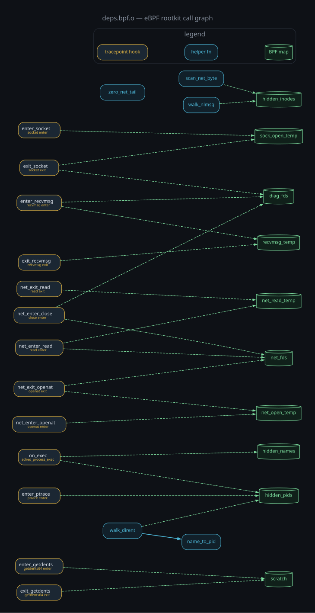

The shape of the problem
A modern eBPF agent is two halves in one file. The half you see is an ordinary
x86-64 user-space program; the half that does the work is an eBPF object compiled
for the EM_BPF machine and loaded into the kernel at runtime. With
libbpf the loader almost always hands that object to
bpf_object__open_mem(buf, size, opts) — which means the eBPF ELF has to
sit, uncompressed, somewhere in the binary's image. bpf_object__open_mem
does not decompress anything; whatever you give it must already be a valid
ELF. That is the whole weakness we lean on.
The sample that motivated this was a stripped Rust PIE dynamically linked against
libbpf.so.1 — the deps credential stealer from the June 2026
Atomic
Arch AUR supply-chain campaign (Sonatype-2026-003775), in which a single
actor adopted 408 orphaned AUR packages and laced their PKGBUILDs to drop this binary.
Its .rodata showed entropy above 7, which
reads like "packed" — but it is not. The high entropy is simply a dense eBPF object
(bytecode + BTF + maps) embedded verbatim. Confirming that took two observations:
the import table mentions bpf_object__open_mem /
bpf_object__load / bpf_program__attach, and the single call
site spells the payload out directly:
lea rdi, [0x5555555864f9] ; buffer
mov esi, 0xce28 ; size = 52776 bytes
call qword [0x555555837508] ; bpf_object__open_mem(buf, 0xce28, opts)At that address: 7f 45 4c 46 02 01 01 00 … 01 00 f7 00 — ELF magic,
ELFCLASS64, e_machine = 0xF7 (EM_BPF). No
compression, no XOR. The "packed payload" is a plain embedded ELF.
The static carve
You do not even need the call site. Because the embedded program is a real ELF,
you can scan the file for an EM_BPF header and recover its exact length
from the section-header table. Clang/LLVM lays the section header table out last in a
BPF relocatable object, so e_shoff + e_shnum × e_shentsize is the end of
the object — carve from the magic to there.
#!/usr/bin/env python3
"""Static unpacker for embedded eBPF objects.
Reads the file, never executes it. Scans for an EM_BPF ELF, computes its
real size from the section-header table, and carves it out."""
import struct, sys, hashlib
EM_BPF = 0xF7
def carve_bpf(path):
data = open(path, "rb").read()
out, i = [], 0
while True:
i = data.find(b"\x7fELF", i)
if i < 0:
break
ei_class = data[i + 4] # 2 = ELFCLASS64
e_machine = struct.unpack_from("<H", data, i + 18)[0]
if ei_class == 2 and e_machine == EM_BPF:
e_shoff = struct.unpack_from("<Q", data, i + 0x28)[0]
e_shentsz = struct.unpack_from("<H", data, i + 0x3A)[0]
e_shnum = struct.unpack_from("<H", data, i + 0x3C)[0]
end = e_shoff + e_shentsz * e_shnum # SHT is last in BPF .o
out.append((i, data[i:i + end]))
i += 4
return out
if __name__ == "__main__":
src = sys.argv[1] if len(sys.argv) > 1 else "sample"
for n, (off, blob) in enumerate(carve_bpf(src)):
name = f"{src}.bpf{n if n else ''}.o"
open(name, "wb").write(blob)
print(f"[+] {name}: off=0x{off:x} size={len(blob)} "
f"sha256={hashlib.sha256(blob).hexdigest()}")Output on the sample — a clean, unstripped eBPF object you can drop straight into
readelf, llvm-objdump -d or bpftool:
[+] sample.bpf.o: off=0x324f9 size=52776 sha256=3607de25…0f7b01
sample.bpf.o: ELF 64-bit LSB relocatable, eBPF, version 1 (SYSV),
with debug_info, not strippedDoes it work on other samples?
Yes, for the common case — and that case is wide. Anything that loads its program
through bpf_object__open_mem must keep an uncompressed BPF ELF in the
image, and that includes the dominant build styles:
- libbpf skeletons (
bpftool gen skeleton) embed the raw.oas a byte array — carves cleanly. - libbpf-rs / Rust loaders (like this sample) and most C agents built on libbpf — same story.
- Multiple programs in one binary — the scan loops and dumps each one.
Where it stops:
- Compressed or encrypted payloads. If the blob is XOR'd,
deflated, zstd'd, etc., there is no
EM_BPFmagic to find. You then have to locate the unpacking routine and either replay it statically or let an emulator run just that function — never the whole binary. - Aya / pure-Rust loaders that build the program a different way, or loaders that assemble the object on the fly, won't always present a single contiguous ELF.
- Trailing-data edge cases. The size heuristic assumes the section header table is the last structure (true for clang BPF objects). Vendor tooling that appends data could shift it; ELF readers tolerate trailing bytes, so erring long is harmless.
What the carved program turned out to be
The recovered object kept its BTF and debug strings, so its intent reads straight
off the section and map names: an eBPF hiding rootkit. It pins maps
named hidden_pids, hidden_names and
hidden_inodes, then attaches tracepoints that rewrite what user space is
allowed to see — getdents64 to hide files and processes,
openat/read to scrub /proc/net entries,
recvmsg to filter netlink so hidden sockets vanish from
ss, ptrace for anti-debug, and
sched_process_exec to keep the cloak across exec. None of
that required running it.
Because the object kept its symbols, the relocations alone reconstruct the whole
design: every tracepoint entry point, the maps it reads and writes, and the one
surviving bpf-to-bpf call (walk_dirent → name_to_pid — everything else is
inlined). The graph below is built purely from that static relocation data, no
execution:

deps.bpf.o —
gold = tracepoint hooks, teal = out-of-line helpers, green cylinders = BPF maps.
Dashed edges are map reads/writes; the solid edge is the lone bpf-to-bpf call.
Reconstructed from relocations with a ~150-line parser, nothing executed.Developer artifacts: the name the author gave it
The carved eBPF object was compiled with debug info and never stripped, so its DWARF line table still carries the absolute path of the original source on the author's build machine:
/cloud/scales/agent/../ebpf/scales.bpf.c
→ /cloud/scales/agent/ebpf/scales.bpf.cThat single path leaks more than a filename. The project root is
/cloud/scales/, split into agent/ (the user-space Rust
loader — the binary distributed as deps) and ebpf/ (the
kernel-side program, scales.bpf.c). In other words, the internal
codename the developer gave this tool is "scales" — not a vendor
label or a campaign nickname, but the author's own working name, left behind because
the BPF object was shipped unstripped while the Rust binary's own .rs
paths were remapped away. The kernel half betrayed the project; the user-space half
did not.
At the time of writing the source filename
scales.bpf.c had been noted once in passing by the press, but the full
build tree (/cloud/scales/agent) and the reading of scales as the
project's internal codename do not appear in the public technical analyses I could
find — caveat that I only checked the main sources.
Following the loader with mwemu
The carver above is enough when the object is in the clear. To find it in the first place — and to handle samples where it is not in the clear — I walked the loader under mwemu, a CPU emulator that runs the binary's instructions in software and never lets a single one touch the real machine. For a stealer that installs kernel-side eBPF hooks, that distinction is the whole point: you get to step through the program without giving it a kernel.
The whole session was driven from an AI agent over two
MCP servers: a
mwemu MCP exposing the emulator (open a session, load the binary,
disassemble, read registers and memory, search the address space) and a
radare2 MCP for static analysis (it resolved the cross-reference
from the GOT slot of bpf_object__open_mem back to its single call site).
Together they let the loader be inspected conversationally without ever executing it.
mwemu loaded the PIE with a realistic Linux image — relocated to its base, sections
mapped, a simulated libc and stack in place — and disassembled the
startup chain (_start → __libc_start_main →
main) on demand. From there the useful moves were all read-only:
- disassemble the call site and read its operands, which is where the
lea rdi, […]/mov esi, 0xce28pair handed up the buffer pointer and size of the embedded object; - read that address straight out of emulated memory and see the
EM_BPFELF header sitting there; - search the emulated address space for magics and markers — all without the process ever running.
For this sample the object was uncompressed, so the carve closed it out. But the same emulated approach is exactly how you defeat a packed one: let mwemu execute only the decompression routine, in software, then dump the now-plaintext ELF from emulated memory — still without detonating the malware. Reading bytes, not running them, end to end.
References
- Sonatype — Atomic Arch (Sonatype-2026-003775)
- The Hacker News — 400+ AUR packages hijacked to deploy infostealer and eBPF rootkit
- BleepingComputer — Over 400 Arch Linux packages compromised
- HackRead — Atomic Arch (passing mention of
scales.bpf.c) - ioctl.fail — preliminary technical analysis of the AUR malware
- mwemu — the emulator used to walk the loader (driven via its MCP server)
- radare2 — static analysis / xref resolution (via its MCP server)
- Model Context Protocol — how both tools were driven from the agent
Static ELF inspection plus mwemu to follow the loader without executing it, and the carver above. The sample itself is not published.
Indicators of compromise (IOCs)
Hashes, paths and behavioral markers verified directly from the sample, except where noted as per public reporting. The targeted-service domains are endpoints the stealer reads credentials for, not attacker infrastructure.
Files & hashes
| Artifact | Value |
|---|---|
Loader (payload ELF) deps — SHA-256 | 6144d433f8a0316869877b5f834c801251bbb936e5f1577c5680878c7443c98b |
deps GNU BuildID | 41980d03dc3c4809591db0ff17003a82bc067d97 |
Embedded eBPF object scales.bpf.o — SHA-256 | 3607de2597f8955f9a88f36ee43b64d3891b8ef536e99fa098e80169350f7b01 |
eBPF object location in deps | .rodata, file offset 0x324f9, length 0xce28 (52776 bytes) |
Host filesystem (rootkit)
- Pinned BPF maps:
/sys/fs/bpf/hidden_pids,/sys/fs/bpf/hidden_names,/sys/fs/bpf/hidden_inodes - BPF map names:
hidden_pids,hidden_names,hidden_inodes,diag_fds,net_fds,net_open_temp,net_read_temp,recvmsg_temp,scratch,sock_open_temp
eBPF behavior (attached tracepoints)
tp/syscalls/sys_{enter,exit}_getdents64— hide files/processestp/syscalls/sys_{enter,exit}_openat,sys_{enter,exit}_read,sys_enter_close— scrub/proc/nettp/syscalls/sys_{enter,exit}_recvmsg— netlink filteringtp/syscalls/sys_{enter,exit}_socket— track socket fdstp/syscalls/sys_enter_ptrace— anti-debugtp/sched/sched_process_exec— persist cloak across exec
Developer / build artifacts
- Build path (from unstripped DWARF):
/cloud/scales/agent/../ebpf/scales.bpf.c - Project root
/cloud/scales/; loader diragent/; eBPF sourcescales.bpf.c; internal codename scales
Network — exfiltration & C2
- Exfil over HTTP upload to
temp.sh - C2 via a Tor onion service through a local loopback proxy (per public reporting)
- TLS client uses Encrypted Client Hello (ECH) to hide the SNI
Stealer detection (targeted endpoints, paths & queries)
- Queried services:
teams.microsoft.com(skypeToken),*.slack.com(xoxc-tokens),discord.com,api.github.com,registry.npmjs.org(_authToken) - Cookie-theft SQL:
SELECT encrypted_value FROM cookies WHERE host_key LIKE '%teams.microsoft.com' ORDER BY last_access_utc DESC LIMIT 30;SELECT encrypted_value FROM cookies WHERE name = 'd' AND host_key LIKE '%.slack.com' ORDER BY last_access_utc DESC LIMIT 1 - Filesystem reads:
~/.ssh,/etc/passwd,/proc/self/loginuid,~/.config/discord,~/.config/discordcanary,~/.config/Slack,~/.config/Microsoft/, browser cookie/Local Storage LevelDB stores,monero-wallet-gui
Campaign / distribution (per public reporting)
- Campaign: Atomic Arch — Sonatype-2026-003775
- Threat actor handle:
arojas; 408 hijacked AUR packages - npm dropper:
atomic-lockfile@1.4.2, payload atsrc/hooks/deps